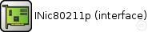
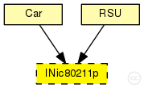
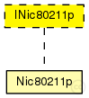

This documentation is released under the Creative Commons license
This documentation is released under the Creative Commons license(no description)
The following diagram shows usage relationships between types. Unresolved types are missing from the diagram. Click here to see the full picture.
The following diagram shows inheritance relationships for this type. Unresolved types are missing from the diagram. Click here to see the full picture.
| Name | Type | Description |
|---|---|---|
| Car | compound module | (no description) |
| RSU | compound module | (no description) |
| Name | Value | Description |
|---|---|---|
| display | i=block/ifcard |
moduleinterface INic80211p { @display("i=block/ifcard"); gates: input upperLayerIn; // to upper layers output upperLayerOut; // from upper layers output upperControlOut; // control information input upperControlIn; // control information input radioIn; // radioIn gate for sendDirect }
This documentation is released under the Creative Commons license